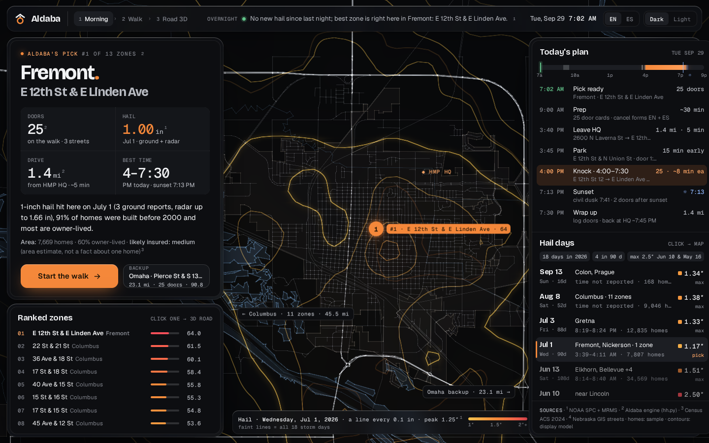
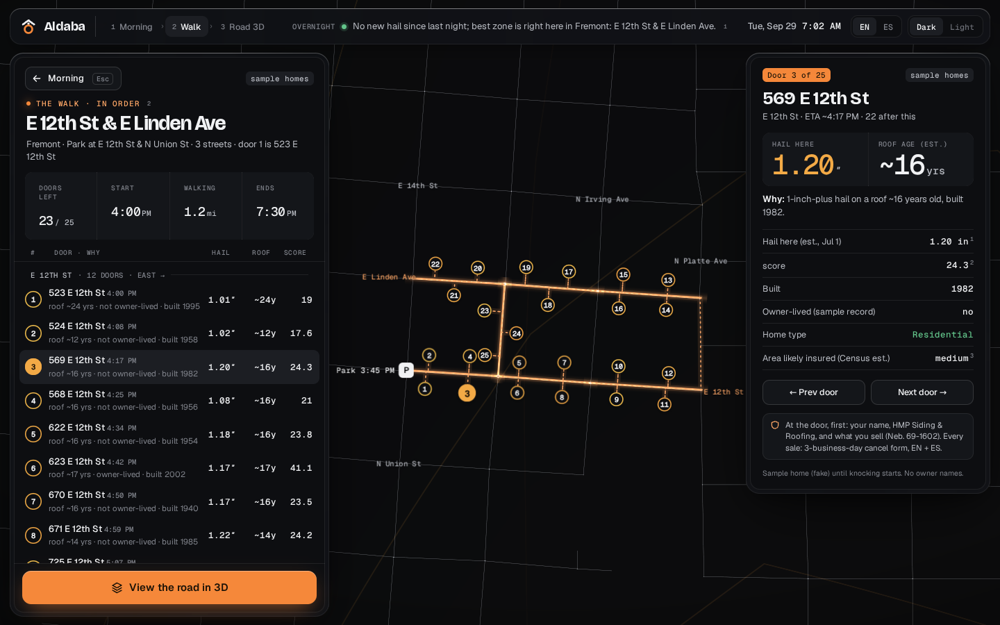
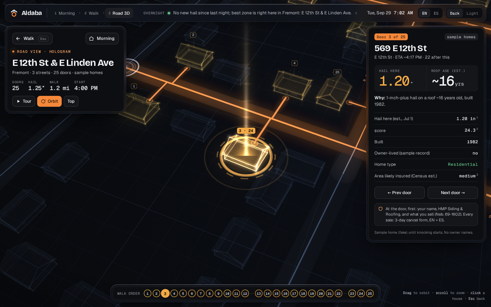
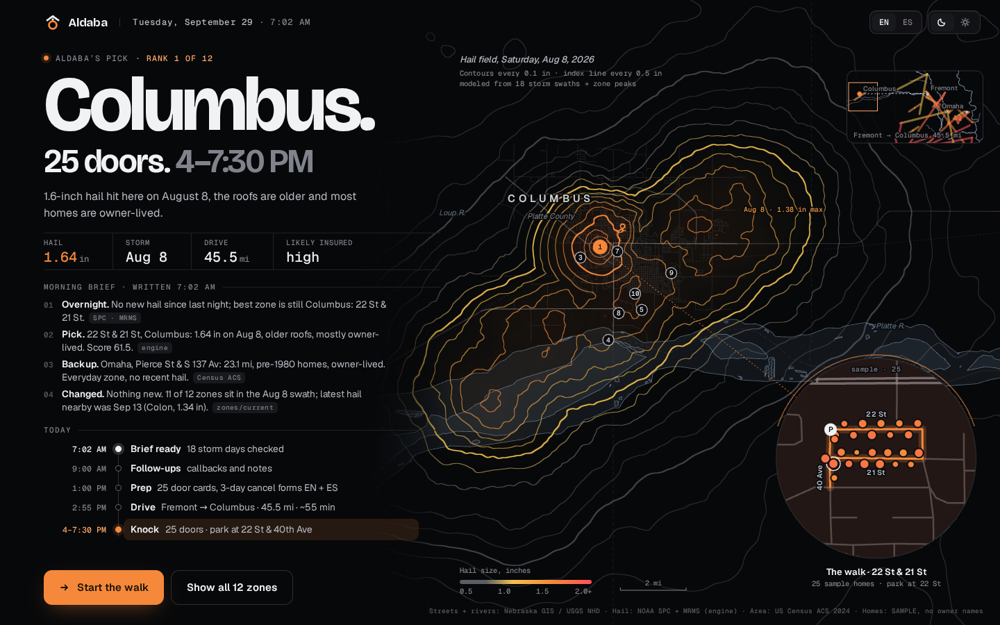
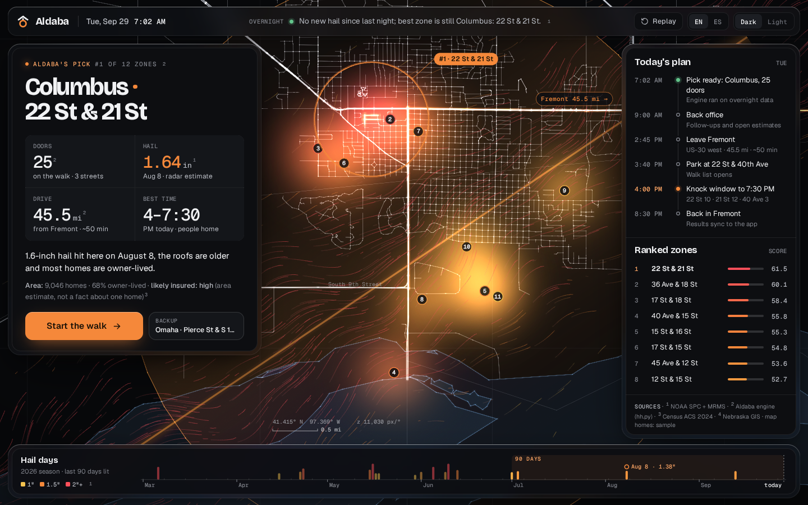
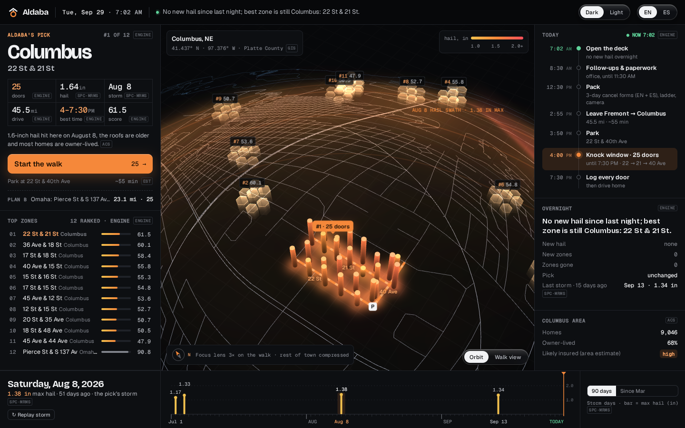

D keeps what you liked in A, B and C and fixes what you didn't. It starts at home in Fremont (your call today): E 12th St & E Linden Ave, 1.00 in hail on Jul 1, 25 doors, 1.4 mi from HQ. Below it, round 1 (A, B, C) as you reviewed it, on the Columbus pick.D se queda con lo que te gustó de A, B y C y arregla lo que no. Empieza en casa, en Fremont (tu decisión de hoy): E 12th St y E Linden Ave, granizo de 1.00 pulg. el 1 de julio, 25 puertas, a 1.4 mi de la base. Abajo, la ronda 1 (A, B, C) tal como la revisaste, con la elección de Columbus.
Round 1, same real data in all three: Aldaba's pick (Columbus, 22 St & 21 St, 1.64 in hail on Aug 8, 25 doors), 12 ranked zones, 18 real storm days, real Nebraska streets. Homes are samples. Open each one live to see its opening moment.Ronda 1, los mismos datos reales en las tres: la elección de Aldaba (Columbus, 22 St y 21 St, granizo de 1.64 pulg. el 8 de agosto, 25 puertas), 12 zonas en orden, 18 días de tormenta reales y calles reales de Nebraska. Las casas son de muestra. Abre cada una en vivo para ver su momento de apertura.





